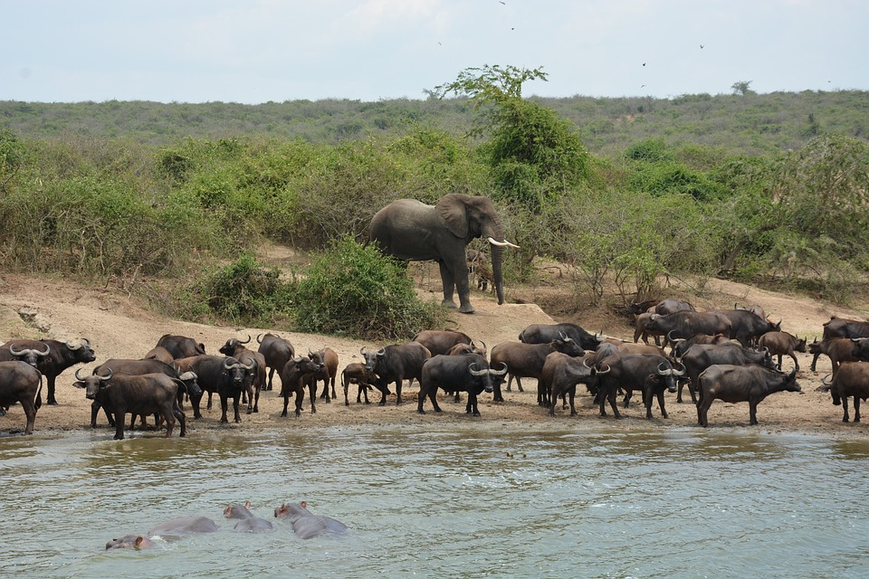

This is one of the oldest and largest National Parks in Uganda measuring 3,840km2. It boasts over 76 species of mammals and 451 birds. Set against the backdrop of the jagged Rwenzori Mountains, the park’s magnificent vistas include dozens of enormous craters carved dramatically into rolling green hills, panoramic views of the Kazinga Channel with its banks lined with hippos, buffalo and elephants, and the endless Ishasha plains, whose fig trees hide lions ready to pounce on herds of unsuspecting Uganda kob. This park is arguably one of Uganda’s best park with a variety to offer ranging from river cruises along the River Nile to Chimpanzee tracking in the nearby Budongo Forest alongside the game drives within the park on the Savannah grasslands. Wildlife include elephant, lion, Cape buffalo, Rothschild’s giraffe, hartebeest, Oribi, bushbuck, Uganda Kob, Bohor reedbuck, spotted hyena and if lucky you could even spot the leopard amongst others. This park has two distinctive parts i.e. the northern section of the park contains savanna and borassus palms, acacia trees and riverine woodland which is an excellent area for game viewing while the south is dominated by woodland and forest patches extending to the Budongo Forest where Chimps tracking takes place.
